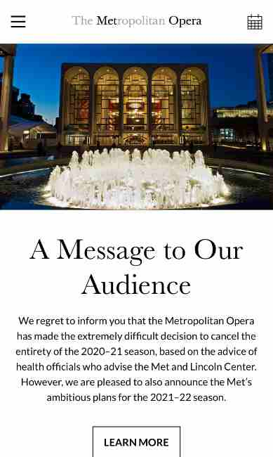
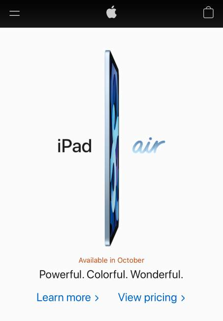

Alignment
The Metropolitan Opera
Centered Horizontal Alignment is commonly used with "call to action" text, which is shown here on The Metropolitan Opera's website. The message on the homepage is to alert visitors of the Met's closure due to COVID-19, and includes a button below for visitors to "learn more" about the closure. Both the message and button are center-aligned.
White Space and Clean Design
Apple
Here we see Apple's website perfectly demonstrating white space and clean design. There is just enough white space between all the elements shown to know that they are all refering to the iPad Air without feeling too crowded or busy. It's a simple, clean design.
Contrast
Target
Target's colors are red and white, which are usually contrasting colors. According to the contrast ratio site, red text on a white background is an okay pair. It's best when the red text is large or bold, which is exactly what Target's website does. If they use smaller or lighter/narrower text, it is colored black or dark gray (instead of red) on the white background for better readability.